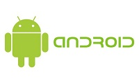
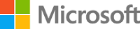

Unsere Partner im Überblick

Im Bereich Betriebssysteme für Mobile Geräte ist Android der Marktführer. Er gehört zu dem Google Dachkonzert Alphabet AG.
Durch diese Zusammenarbeit sichern wir die Bedienung über diverse Smartphones.
Als Luxus Smartphone und Tablet Entwickler ist eine Partnerschaft mit der Apple AG nicht weg zu denken. Diverse Geräte die mit
dem gelieben Obst versehen sind werden bei uns selbstverständlich unterstützt.

Als ein alter Hase in der Entwicklung von Betriebssystemen für mobile Geräte und auch für diverse Laptops und PCs ist eine
Verbindung mit unseren Geräten durchaus möglich. Die Webanwendungen werden speziell für die Microsoft AG angepasst.
Die Festo AG ist Marktführer in Steuerungs und Vernetzungstechnik und gewährt uns durch die Partnerschaft einblicke in das
Know How ihrer Geräte. Diese Technology wird direkt auf unsere Produkte übertragen.